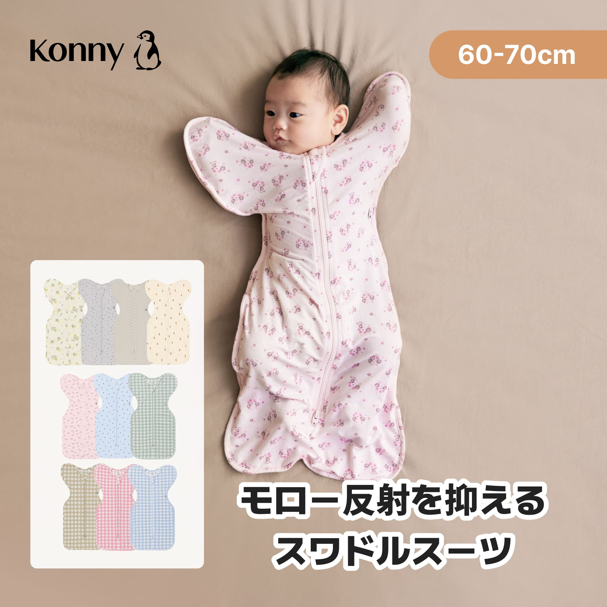
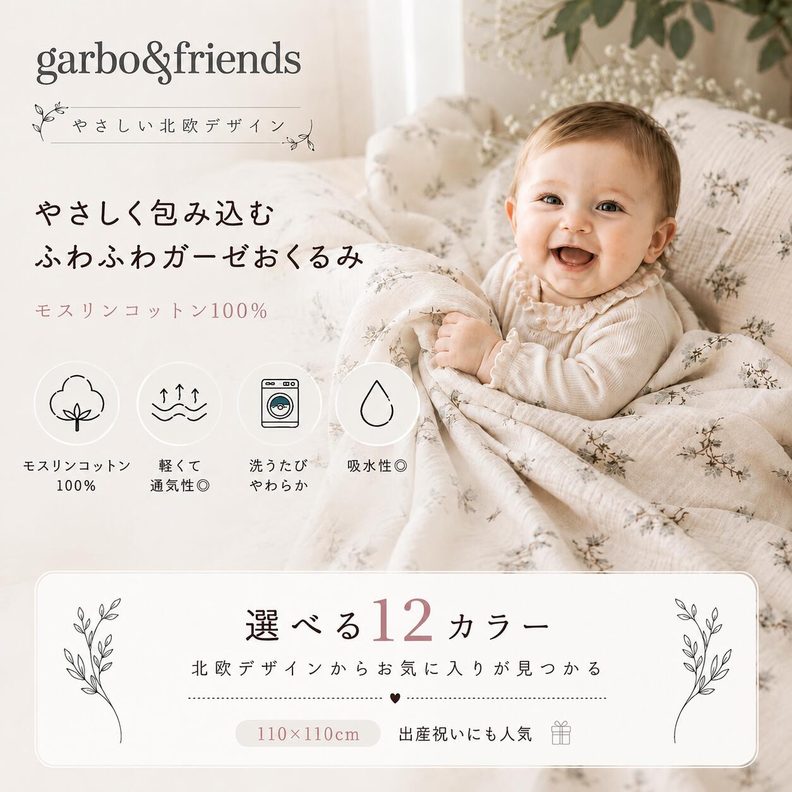

おくるみは、出産祝いのド定番です。かわいい柄が多く、値段も手頃で、赤ちゃんに直接使える。贈る側から見れば、ほぼ完璧なギフトに見えます。
でも、もらう側の本音は少し違います。おくるみは「もらって困るもの」ではありません。ただし、確認なしで贈ると、最もかぶりやすい贈り物のひとつです。当サイト運営者自身、出産祝いでおくるみ（特にモスリンの大判タイプ）が大量に届き、未開封のまま手放したものがあります。
この記事では、なぜおくるみが重なるのか、贈る前に何を確認すればいいのか、素材・サイズ・季節でどう選べば「かぶらない1枚」になるのかを整理します。おくるみにこだわらない場合の代替案も、最後にまとめます。
なぜおくるみは重なるのか
理由は、おくるみが「無難」だからです。出産祝いに迷ったとき、「とりあえずおくるみ」と考える人は一人ではありません。贈る側全員が同じ発想をするので、もらう側には同じ用途の布が何枚も集まります。
受け取った女性400名の調査（リンベル調べ）でも、「もらって困った理由」には「すでにたくさん持っているもの」が29.0%、「他の人からのお祝いと重複したもの」が26.3%と、重なり由来の理由が上位に入っています。おくるみは、この2つが最も起きやすい品目の代表です。
- 贈る側の「無難」が集中する：性別を問わず、価格帯も選びやすいため、友人・同僚・親戚の選択が重なります。
- 病院や親戚のルートでも届く：退院時に産院からもらえる場合があり、親戚の定番でもあるため、友人分と合わせて枚数が膨らみます。
- セット商品が多い：2枚・4枚セットで贈られることが多く、「人数×セット数」で想定以上の枚数になります。
- 2人目はお下がりが加わる：1人目で集まった在庫が残っている家庭では、新品のおくるみの置き場所から困ります。
運営者自身の受け取り体験も、正直に書いておきます。
・おくるみ（特にモスリン生地）は大量に届きました。使い切れず、未開封のまま手放したものがあります。
・フード付きタオルも大量に来ましたが、実際に使いやすいのはフードなしのほうでした。同じ「布もの」でも、仕様の好みで残り方が変わります。
・逆に、薄手で乾きやすいガーゼは、洗い替えとして最後まで出番がありました。「枚数」そのものより、素材と仕様で使われ方が分かれた、というのが実感です。
ママの本音コメント
※以下3件は、口コミ・編集部ヒアリング・ギフト利用シーンをもとに再構成したコメントです。個別の取材ではありません。
美咲さん：数えたら7枚ありました
「1人目のとき、おくるみは数えたら7枚ありました。病院でもらったものもあって、半分くらいは出番がないままタンスの中でした。嫌いなわけじゃないんです。ただ、そんなに要らなかった、というだけです」
（「重なる」の代表的な声。運営者の実例とも重なります）
沙織さん：残ったのは、乾きやすいガーゼ
「同じおくるみでも、薄くてすぐ乾くガーゼは洗い替えで回せて、結局いちばん使いました。厚手で乾きにくいものは、かわいいけど出番が減っていきました」
（素材で使われ方が分かれた例。本文「選び方」の節に対応）
奈央さん：フード付きタオルも同じでした
「フード付きタオルも何枚か届きました。写真映えはするんですけど、実際に巻きやすくて乾きも早いのはフードなしの方で、そっちばかり使っていました」
（仕様の好みが分かれる例。代替案の節に対応）
贈る前に確認するコツ
おくるみの重なりは、贈る前の一言でかなり避けられます。聞き方のコツは、「何が欲しい？」ではなく、事実を確認する形に寄せることです。
- 「おくるみ、もう何枚かある？」——枚数を聞けば、足りているかどうかがそのまま分かります。3枚以上あると言われたら、別ジャンルに切り替える合図です。
- 「生まれるの、どの季節だっけ？」——素材と厚みを選ぶ前提になります（次の節）。予定日が分かれば、使う季節から逆算できます。
- 2人目なら「お下がり、残ってる？」——1人目のおくるみが残っている家庭では、新品はほぼ確実に余ります。
- 聞けない関係なら、おくるみ自体を外す——確認できない定番品は、確認なしで成立する品（後述の代替案）に逃がすのが安全です。
「欲しいものを聞く」贈り方は、2人目向けの調査でも約42.3%と最多の作法でした（ハッピー・ノート調査）。聞くこと自体は、失礼でもサプライズの放棄でもありません。
かぶらない選び方：素材・サイズ・季節
確認したうえで、それでもおくるみを贈るなら、差がつくのは次の3点です。
素材：モスリンか、ガーゼか、厚手か
モスリンは通気性がよく、洗うほど柔らかくなるのが特徴で、通年使えます。出産祝いの主流ですが、その分いちばん被ります。ガーゼは薄くて乾きやすく、洗い替えとして回しやすい素材です。厚手・キルトタイプは冬向けで、使う季節がずれると出番がないまま終わります。肌に触れるものなので、素材の好みが分かれる点も前提にしてください。
サイズ：大判（120cm前後）が用途で勝つ
巻く以外に、掛ける・授乳ケープ・ベビーカーの日よけ・おむつ替えシートと用途が広がるのは、120×120cm前後の大判です。小さめのサイズは「巻く」用途が終わると出番が減ります。逆に大きすぎるものは持ち運びで敬遠されるため、120cm前後が実用の中心です。
季節：「生まれる季節」ではなく「使う季節」で選ぶ
おくるみを集中して使うのは生後数か月です。夏生まれに厚手、冬生まれに薄手だけ、という組み合わせはミスマッチになります。迷ったら、通年使えるモスリンかガーゼに寄せるのが無難です。柄については、白・生成りなどの無難な色ほど他の贈り手とも被る、というジレンマがあります。ここは次の「厳選」で考えます。
どうしても贈るなら「1枚を厳選」
原則は、複数枚セットを避けて、「理由のある1枚」に絞ることです。セットは、もらう側の在庫を一気に増やします。実例を3つ挙げます（価格はいずれも2026年11月20日に楽天市場の販売ページで確認）。
定番を1枚だけ：aden+anais シングルスワドル
モスリンおくるみの代表格です。120×120cmの大判で、巻く・掛ける・日よけと用途が広く、通年使えます。定番中の定番だからこそ、贈るなら4枚セットではなくシングル（1枚）で。柄の好みは分かれるので、柄は事前にさりげなく確認できる相手向けです。公式ショップで2,640円＋送料880円でした。

役割をずらす：「着せるタイプ」という選択肢
巻くおくるみがすでにありそうな相手には、形そのものを変える手があります。コニーのスワドルスーツは、布で巻くタイプではなく、袋型に「着せる」タイプのおくるみです。巻き方のコツが要らず、寝かしつけ用途に寄っているため、巻くタイプとは役割が重なりにくいのが利点です。コニー楽天市場店でセール価格2,800円＋送料600円でした（通常価格2,980円）。ただし対象は0〜6か月ごろまでで、使える期間が限られる点は正直に書いておきます。

格上げの1枚：ガルボアンドフレンズ
「自分では買わないけれど、もらうと嬉しい」ラインを狙うなら、柄と素材で格上げした1枚です。スウェーデン発のガルボアンドフレンズのスワドルブランケットは、モスリンコットン100%・110×110cmで、花柄など大人っぽい柄が特徴です。おくるみとしてだけでなく、ママの膝掛けとしても使える柄なので、「赤ちゃん用品で終わらない」のが強みです。コニコニ（正規代理店）で6,600円〜・送料無料でした。

おくるみ以外の代替案
「おくるみはやめておこう」と決めた場合、同じ「布もの」のガーゼケットに横滑りすると、被る構造はあまり変わりません。ジャンル自体をずらすのがおすすめです。
| 予算 | おくるみの代わりに | おすすめポイント |
|---|---|---|
| 〜3,000円 | フードなしの大判バスタオル | お風呂上がりに毎日使う実用品。フード付きは好みが分かれるため、フードなしが無難 |
| 3,000〜5,000円 | おしりふき等の消耗品 | 被っても消費される。在庫にならない |
| 5,000円〜 | ギフトカード／カタログギフト | 好みを外さず、置き場所も取らない |
消耗品の選び方は、別記事にまとめています。
→ 重なりやすい品目全体の整理はこちら：出産祝いを選ぶ前に確認したい、重複・好み・置き場所
まとめ
- おくるみは「いらない」ものではなく、確認なしで贈ると最もかぶる品目です。定番であること自体が、重なりの原因になっています。
- 贈る前に「もう何枚ある？」「生まれる季節は？」「お下がりは残っている？」と、事実を確認するだけで大半の重なりは避けられます。
- 贈るなら、素材（モスリン／ガーゼ／厚手）・サイズ（120cm前後の大判）・季節（使う時期）で選び、複数枚セットではなく理由のある1枚に絞ります。
- 形をずらす「着せるタイプ」や、格上げした1枚も、かぶりにくさの工夫になります。
- おくるみを外すなら、ガーゼケットへの横滑りではなく、タオル・消耗品・ギフトカードとジャンル自体をずらすのが安全です。
この記事について
広告・PRについて
※この記事にはアフィリエイト広告（PR）が含まれます。記事内のリンクからご購入いただくと、当サイトに紹介料が支払われる場合があります。なお、記事の内容は広告の有無ではなく、下記の調査根拠に基づいて決めています。価格は各リンク先でご確認ください。
価格の確認について
本記事で金額に触れた商品の価格は、2026年11月20日に楽天市場の各販売ページで確認しました（シングルスワドル 2,640円＋送料880円／スワドルスーツ セール価格2,800円＋送料600円／スワドルブランケット 6,600円〜・送料無料）。価格・在庫・セール内容は変動します。
調査根拠・出典
この記事は、当サイト運営者自身が出産祝いを受け取った体験と、公開調査・SNSの声をもとに作成しています。「運営者の実例」として書いた内容（おくるみ・フード付きタオルの重なりなど）は、運営者自身の受け取り体験をそのまま記載したものです。「ママの本音コメント」は、口コミ・編集部ヒアリング・ギフト利用シーンをもとに再構成したコメントで、特定の個人への取材ではありません。
参考にした一次情報
- リンベル「出産祝いに関する調査」（受け取った女性400名）：「もらって困った理由」のうち「すでにたくさん持っているもの」29.0%、「他の人からのお祝いと重複したもの」26.3%の出典。
- ハッピー・ノートの2人目向け調査：贈り方として「欲しいものを聞く」が約42.3%で最多だったことの出典。
- 各商品の素材・サイズ・価格：楽天市場の販売ページ（aden+anais公式ショップ／コニー楽天市場店／コニコニ）で2026年11月20日に確認。